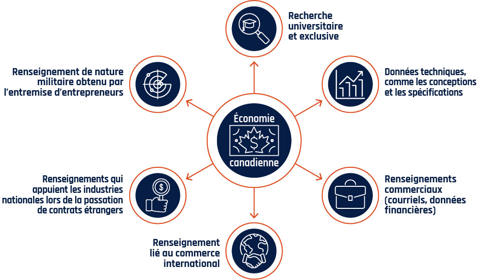
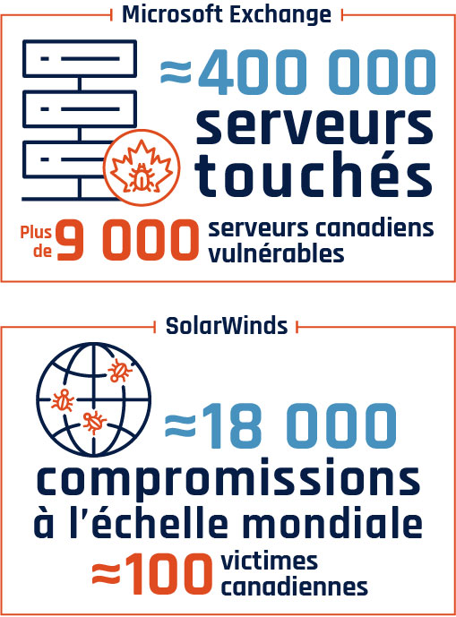

Ingénieur en CyberSécurité
Les métiers de la cybersécurité impliquent la protection des systèmes d'information contre les
menaces. Les professionnels analysent les risques, mettent en place des stratégies de prévention et
de réaction, et veillent à la sécurité des données à travers diverses fonctions comme l'ingénierie,
l'analyse, l'architecture ou encore le conseil.
Exemples de métiers:
- Responsable de la sécurité des systèmes d'information (RSSI)
- Consultant en cybersécurité
- Analyste SOC (Security Operations Center)
- Hacker éthique / pentester
- Délégué à la protection des données (DPO)
Au Québec, le
salaire d'un ingénieur en cybersécurité varie généralement entre environ 93 330$ et 120 360$ par
an, mais peut être plus élevé en fonction de l'expérience et des spécialisations.
La CyberSécurité c'est essentiel pour le bon fonctionnement de
l'économie et du pays,
car les virus informatiques ou les Hackers visent les infrastructures essentiels d'un pays.

Voici un bref résumer des attaques et serveurs
touchés en 2021.
